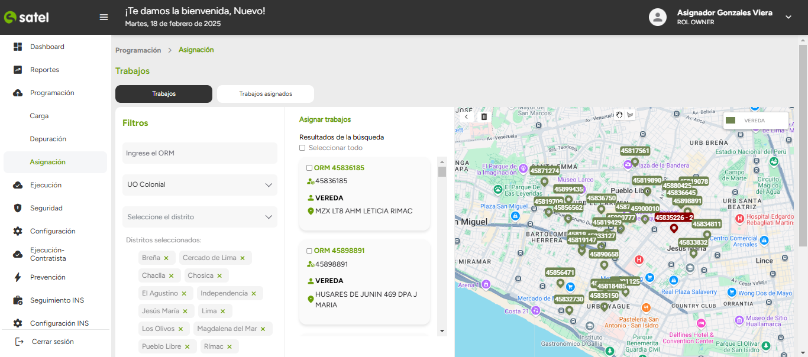

PROYECTOS

El proyecto Satel, consto de hacer una página web para el mejor manejo de los datos que tiene en sus diversas sucursales como a la vez, ver el rendimiento de los trabajadora, tambien monitorear y levantar incidencias que dia a dia los clientes reportan.
Año
2024
Rol
Front-end Developer
El proyecto TuTicket, consto de hacer una plataforma web interactiva con el usuario que consta desde vista de evento hasta la compra hecha con pasarelas de pago y seguros.
Año
2024
Rol
Front-end Developer
Es una multiplataforma para gestion de firmas digitales, gestion de usuarios, el programa también cuenta con multi-idioma para el mejor manejo de los clientes
Año
2025
Rol
Front-end Developer